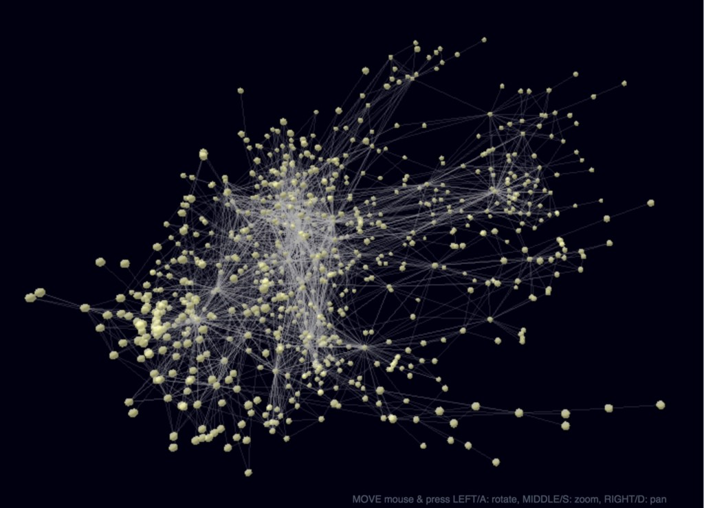
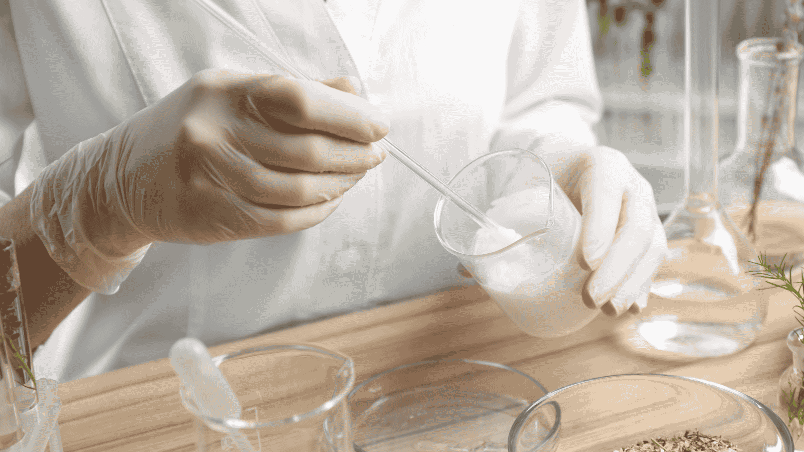

Unlocking the Power of Plant Metabolomics for Farmers
In recent years, plant metabolomics has emerged as a groundbreaking tool with the potential to transform agriculture and open new avenues in the food industry. Let's explore how this innovative technology can revolutionize crop management and create new opportunities.
What is Plant Metabolomics?

Plant metabolomics is the large-scale study of small molecules, also known as metabolites, within plants. These metabolites are the building blocks of a plant's biochemistry, influencing its growth, resilience to stress, and interactions with the environment. By analyzing these metabolites, farmers and researchers can uncover vital information about plant health, productivity, and potential uses.
Key Applications:
- Detect early signs of stress or disease
- Identify traits for improved resilience to drought or pests
- Discover bioactive compounds with potential for alternative uses
Practical Applications for Farmers
1. Smarter Crop Management
Plant metabolomics allows farmers to monitor crop health in real-time, detecting changes in metabolite profiles before visible symptoms appear. This early warning system enables precise adjustments to water, fertilizer, and pest control applications, reducing waste and improving efficiency.
2. Crop Diversification Opportunities
Through metabolomics, farmers can identify underutilized plants with high-value bioactive compounds and crops with natural resilience to local conditions. For example, Australian native plants like Kakadu plum and Davidson's plum have unique metabolites that make them highly sought after in the global food market.
3. Climate Resilience
Understanding the metabolites linked to stress tolerance helps farmers select or breed crops better adapted to local conditions, ensuring long-term productivity despite climate change challenges.
Food Industry Applications
Alternative Products for New Markets

- Functional Foods: Health-promoting compounds
- Natural Sweeteners: Low-calorie alternatives
- Specialty Ingredients: Premium markets